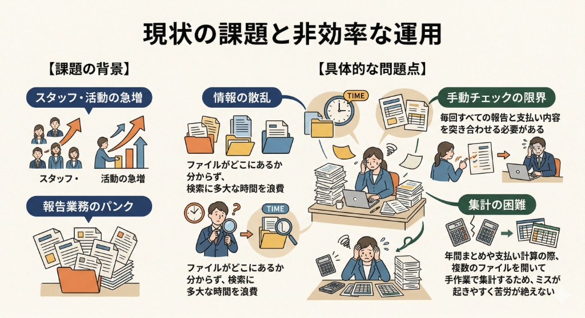
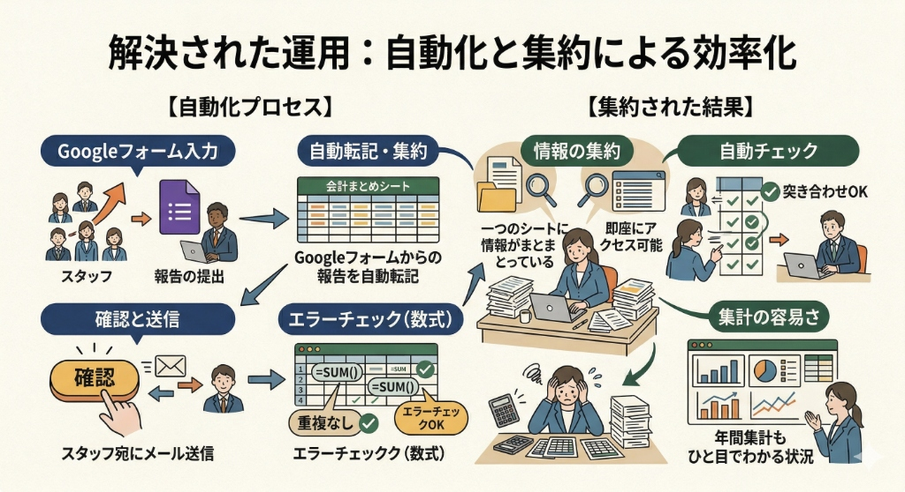

奈良AT協会が進めてきた「仕組みづくり」の紹介
奈良県アスレティックトレーナー協会
関わるメンバーが増えるほど、管理の複雑さも比例して増していった
担当する団体・現場が増え、情報があちこちに散在するように

| 分野 | Before 課題 | After 改善 |
|---|---|---|
| 会計管理 | ファイルが散在・手作業で集計 | 一元化＋自動集計・メール送信 |
| イベント運営 | アンケート作成に時間と手間 | AIで叩き台を作り、数分で完成 |
| SNS広報 | 毎回の画像づくりが負担 | AIツールで手軽に画像を量産 |

各取り組みの背景・具体的な仕組みを記事にまとめています